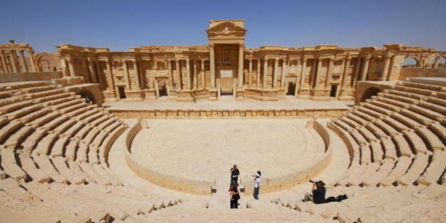
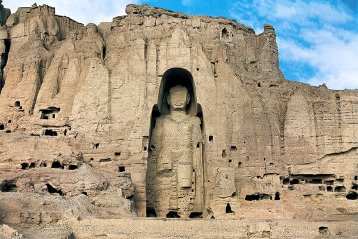
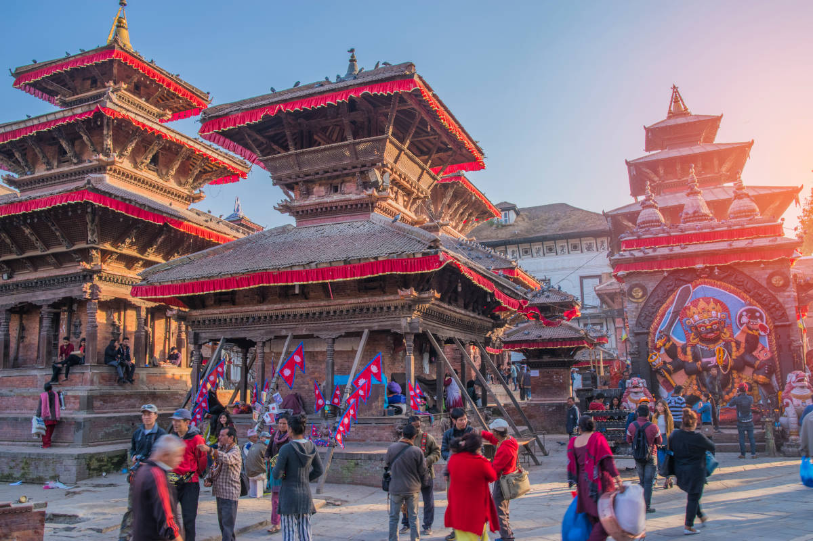
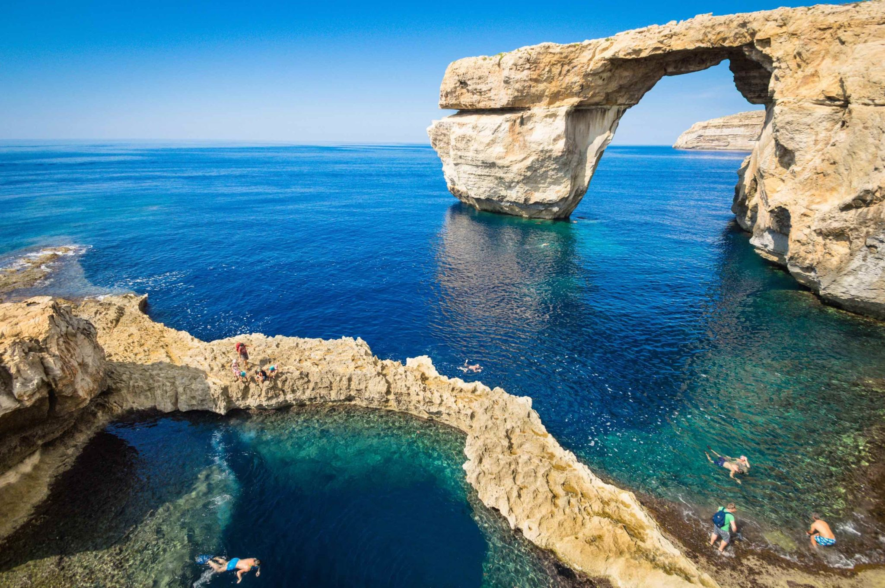

AL igual que los lugares existentes increíbles, hay lugares que han desaparecido a lo largo del tiempo, debido a su deteorización, ya sea por cambios climáticos, movimiento de la tierra, acciones humanas, etc. Eran lugares asombrosos que lamenteblemente ya no se encuentran presentes, sin embargo siempre persistirán en nuestra memoria, como bellezas en el mundo.
1. Ciudad de Palmira
Palmira fue una antigua ciudad situada en el desierto de Siria, en la actual provincia de Homs a 3 km de la moderna ciudad de Tedmor o Tadmir. En la actualidad solo persisten pequeñas ruinas debido a que se han dañado enormemente gracias a la guerra que se encuentra sin fin en Siria.
2. Budas gigantes de Bamiyan
Los Budas de Bāmiyān fueron dos monumentales estatuas de Buda talladas a los lados de un acantilado en el valle de Bāmiyān, en Afganistán central, situado a 230 km al noroeste de Kabul, a una altura de 2.500 metros sobre el nivel del mar. Lo más probable es que se construyeran en los siglos V o VI. Estos fueron derribados por los Talibanes en 2001, debido a la situación de la guerra Siria.
3. Templo Mayor
El Templo Mayor o Gran Templo de México fue el más importante recinto sagrado de México- Tenochtitlan y es actualmente una zona arqueológica en el centro de la ciudad de México. La ciudad de Tenochtitlán, junto con el monumento mayor se encontraban donde está ahora la ciudad de México, específicamente sus ruinas se encunetran debajo de la ciudad, este lugar era impresionante por su estructura y la manera en que fué construida, tan grande e imponente, la capital indígena, esta ciudad desapareció en la colonización por España, se destruyó la ciudad y solo se observan pocos restos de ella.

4. Plaza Durbar
La plaza Durbar es una plaza situada frente al antiguo palacio real de Katmandú en Nepal. Es una de las tres plazas Durbar en el valle de Katmandú, en Nepal. El devastador terremoto de magnitud 7,8 que azotó el valle de Katmanadú en 2015 y que acabó con la vida de más de 2.000 personas en Nepal. Templos y estatuas de entre los siglos XII y XVIII declarados patrimonio de la humanidad sufrieron daños irreparables que aún hoy están siendo reparados.
5. La ventana Azul
Un devastador terremoto de magnitud 7,8 que azotó el valle de Katmanadú en 2015 y que acabó con la vida de más de 2.000 personas en Nepal. Templos y estatuas de entre los siglos XII y XVIII declarados patrimonio de la humanidad sufrieron daños irreparables que aún hoy están siendo reparados.
